Amemet
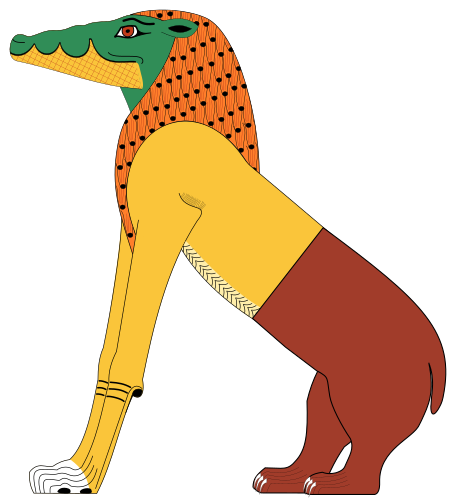
La déesse Amémet est représentée avec la partie postérieure d’un hippopotame, la partie antérieure d’un lion et la tête d’un crocodile. Lors de la pesée des cœurs dans l’au-delà, elle « dévorait » ceux des personnes jugées coupables.
Amon
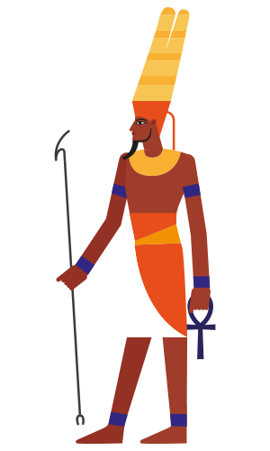
Chef des dieux sous le Nouvel Empire, Amon revêtait l’aspect d’un homme portant une coiffe ornée de deux longues plumes, ou encore celui d’un bélier ou d’une oie. Son épouse, Mout, leur fils Khonsou et lui constituent la triade thébaine, la famille sacrée de Thèbes. Amon en vint à acquérir une importance considérable, mais ne devint jamais un dieu d’État. Il était associé au dieu Rê et vénéré sous la forme du dieu Amon-Rê.
Amon-Rê

Amon-Rê est une des formes du dieu solaire et est parfois figuré comme un sphinx ou un être humain à tête de faucon. Le disque solaire est son symbole. Le mot « Amon » signifie « le caché » ou « le caractère caché de la divinité », tandis que « Rê » ou « Râ » signifie « le soleil » ou la divinité que manifeste la puissance du soleil. Le dieu Amon-Rê incarne ces deux idées : le pouvoir invisible toujours présent et la lumière éclatante de la force divine qui assure la vie. Pour retracer les origines d’Amon-Rê, il faut remonter à l’Ancien Empire, à Héliopolis, où le dieu Rê est apparu pour la première fois en tant que manifestation principale du dieu solaire. Rê est représenté avec la tête d’un faucon surmontée du disque solaire lorsqu’il traverse le ciel, et avec une tête de bélier lorsqu’il accomplit son périple nocturne dans le monde inférieur. Ce dieu local s’est élevé au rang de dieu national, ce qui entraîna l’érection de temples solaires dans tout le pays. Sous la IVe dynastie, les pharaons commencèrent à se considérer comme des incarnations de ce dieu. Plus tard, sous le Moyen Empire, lorsqu’Amon devint le dieu principal, Rê lui fut fusionné pour devenir Amon-Rê.
Anubis
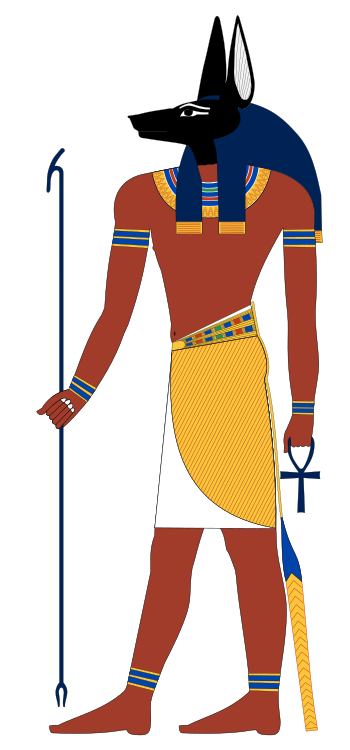
Anubis était une divinité à tête de chacal qui présidait à l’embaumement et accompagnait les rois défunts dans l’au-delà. Lorsque les rois paraissaient devant Osiris pour être jugés, Anubis plaçait leur cœur sur un des plateaux d’une balance, et une plume (représentant Maât) sur l’autre. Le dieu Thot enregistrait le résultat, dont dépendait le droit du roi d’accéder à l’au-delà. Anubis est le fils d’Osiris et de Nephthys.
Aton
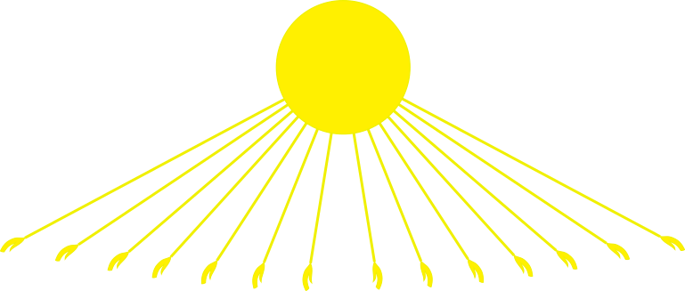
Dieu cosmique primordial, Aton est le dieu solaire en tant que créateur, la substance d’où est tirée toute la création. Il est le seigneur de l’univers. Sous sa forme humaine, il représente le roi d’Égypte, qui porte la double couronne d’Égypte.
Bastet
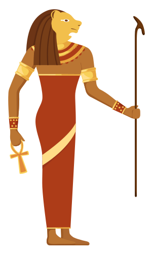
Déesse-chatte, elle symbolise les aspects les plus protecteurs de la maternité, en opposition à l’agressive Sekhmet à tête de lion. Représentée avec un corps de femme et une tête de chatte, elle porte souvent un sistre.
Bès
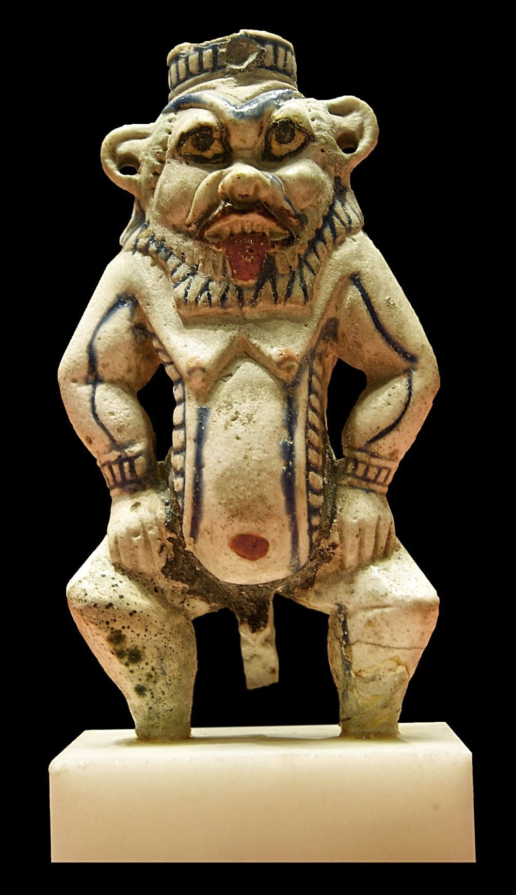
Ce dieu nain, dont le visage lippu a l’allure d’un masque grotesque, porte souvent des instruments musicaux, des couteaux ou le hiéroglyphe représentant la protection. Malgré son apparence, il est le protecteur de la famille et est associé à la sexualité et à l’accouchement .
Chou & Tefnout

Chou est un dieu mâle jumelé à sa sœur, Tefnout. Ensemble, ils personnifient deux principes fondamentaux de l’existence humaine. Chou symbolise l’air sec et la force de conservation. Tefnout incarne l’air humide et corrosif qui engendre le changement, créant le concept de temps. Chou et Tefnout sont les enfants de Rê ( ou d’Atoum, une forme du dieu solaire), un dieu cosmique primordial, qui a engendré les éléments de l’univers.
Geb & Nout

Ces deux dieux sont la contre partie l’un de l’autre. Geb, un dieu terrestre, qui représente la terre émergée, est l’époux de Nout, une déesse céleste qui symbolise le ciel, image inversée de la mer. Nout est représentée comme une femme avec le hiéroglyphe de son nom sur la tête ou comme une femme au corps arqué recouvert d’étoiles. Ils sont les enfants de Chou et de Tefnout .
Hâpî
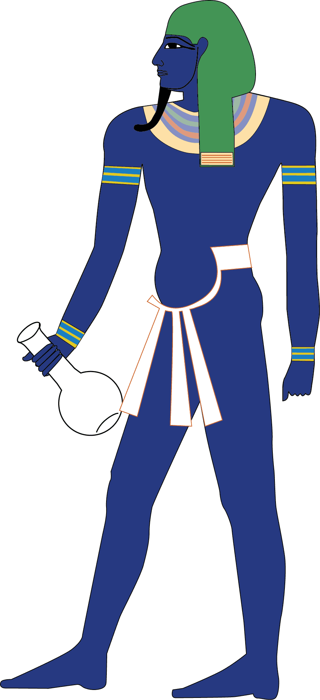
Hâpî, celui qui apporte l’abondance, assurait la crue annuelle du Nil qui fertilisait la terre, permettant de la cultiver. Cette divinité était représentée comme un homme aux cheveux ornés de plantes tenant une table d’offrande garnie des produits de la terre .
Hathor
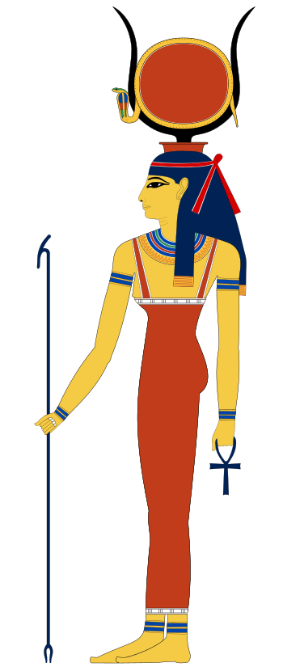
Cette déesse peut prendre trois aspects : celui d’une femme tenant un collier-menat et le disque solaire et portant une couronne formée des cornes d’une vache, celui d’une femme aux oreilles de vache, ou encore celui d’une vache. Elle est la fille de Rê et l’épouse d’Horus, le dieu-faucon céleste. Elle est également considérée comme la mère de chaque roi régnant (tout comme la déesse Isis). La personnalité d’Hathor est double : sous son aspect vengeur, elle prit l’apparence léonine de la déesse Sekhmet et tenta de détruire l’humanité après la révolte décrite dans le mythe de la création; sous sa forme bovine, elle est associée à la sexualité, la joie et la musique.
Horus
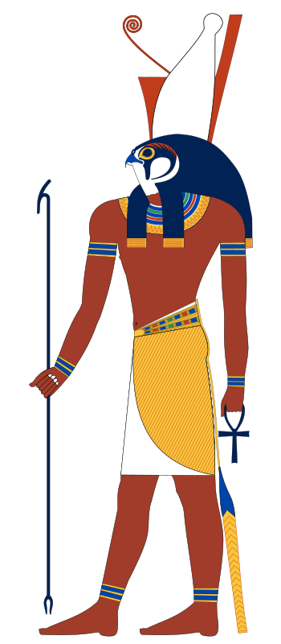
Horus, le dieu à tête de faucon, est bien en évidence en Égypte. Horus est le fils d’Osiris et d’Isis, l’enfant divin de la triade sacrée. Il est l’un des nombreux dieux associés au faucon. Son nom signifie « celui qui est au-dessus » et aussi « celui qui est loin ». Le faucon fut vénéré depuis les temps les plus anciens en tant que divinité cosmique. Son corps représentait le ciel, et ses yeux le soleil et la lune. Horus est représenté comme un faucon portant une couronne avec un cobra ou la double couronne d’Égypte. Le serpent naja (uræus) que les dieux et les pharaons portaient sur le front symbolise la lumière et la royauté. Il a pour fonction de protéger la personne du danger. Lorsque Horus était enfant, son père fut tué par son frère Seth. Pour protéger son fils de tout danger, Isis le cacha dans les marais du Nil, où elle le préserva des serpents venimeux, des scorpions, des crocodiles et des animaux sauvages. En grandissant, il apprit à se protéger lui-même et devint suffisamment fort pour combattre Seth et réclamer son juste héritage, le trône d’Égypte. En conséquence, Horus est associé au titre de roi. Il personnifie le pouvoir divin et royal. Les rois croyaient qu’ils descendaient d’Horus, qui était considéré comme le premier roi divin d’Égypte.
Isis
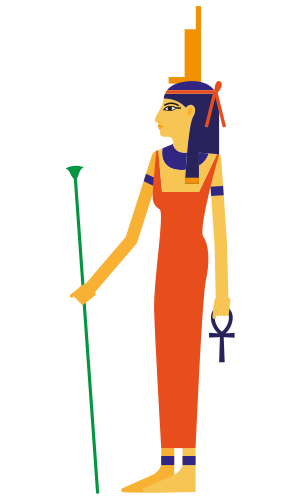
Isis incarne le pouvoir qu’a l’amour de vaincre la mort. Elle ramena son frère - époux, Osiris, à la vie et sauva son fils Horus d’une mort certaine. Elle est représentée la tête surmontée du hiéroglyphe signifiant « trône »; à partir du Nouvel Empire, elle porta parfois un disque solaire flanqué de cornes de vache. Elle est également souvent représentée en train de pleurer la mort de son mari et d’allaiter son fils.
Khnoum
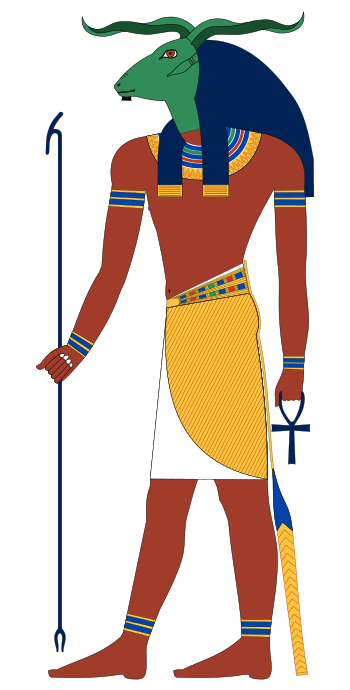
Dieu à tête de bélier aux cornes horizontales, il est souvent figuré en train de façonner des humains sur son tour. Khnoum a émergé de deux cavernes du monde souterrain dans l’océan de Noun. C’était le dieu de la première cataracte du Nil, en Haute-Égypte, et il assurait la fertilité en dirigeant la moitié des eaux du fleuve vers le sud et l’autre moitié vers le nord .
Khonsou
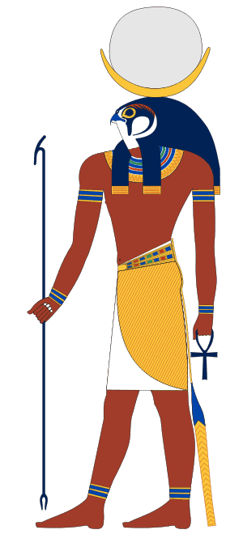
Fils du couple thébain Amon et Mout, c’est un dieu lunaire souvent représenté avec une tête de faucon surmontée d’un croissant de lune et d’un disque lunaire. Il revêt aussi souvent l’aspect d’un jeune homme avec une mèche de cheveux retombant sur le côté du visage, la tête surmontée d’un croissant de lune et d’un disque lunaire .
Maât
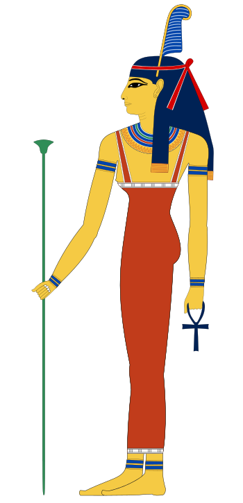
Maât est la déesse de la vérité et de la justice. L’iconographie la représente sous les traits d’une femme à la tête ceinte d’un bandeau orné d’une plume d’autruche.
Min
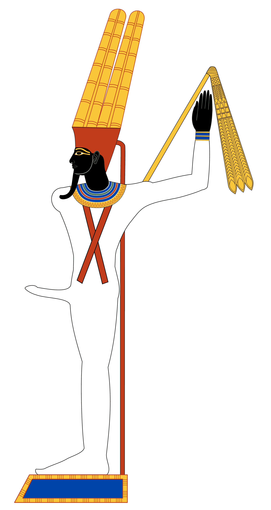
Dieu ayant forme humaine ou de momie, Min est représenté avec un phallus en érection et une couronne surmontée de deux plumes. Dans sa main droite, qui est levée, il tient un fléau. Il est le protecteur de la fertilité et des voyages dans le désert .
Mout
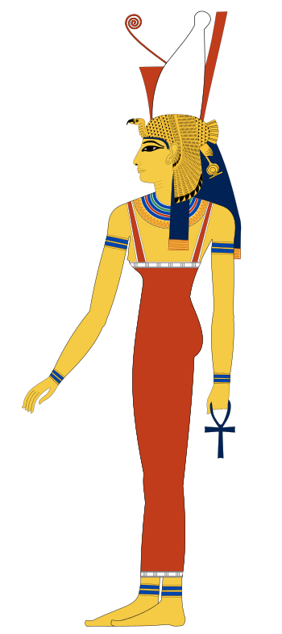
Épouse du dieu thébain Amon, on l’a d’abord représentée sous la forme d’un vautour, puis, plus tard, sous celle d’une femme. Cette déesse, son époux Amon et leur fils, Khonsou, constituent la triade thébaine, la famille sacrée de Thèbes.
Neith
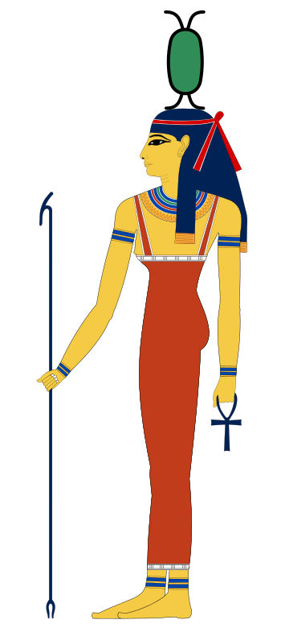
Déesse associée à la guerre et au tissage, elle est avec Isis, Nephthys et Selkis un des personnages importants du culte funéraire. Elle est habituellement figurée portant la couronne rouge de Basse-Égypte.
Nekhbet
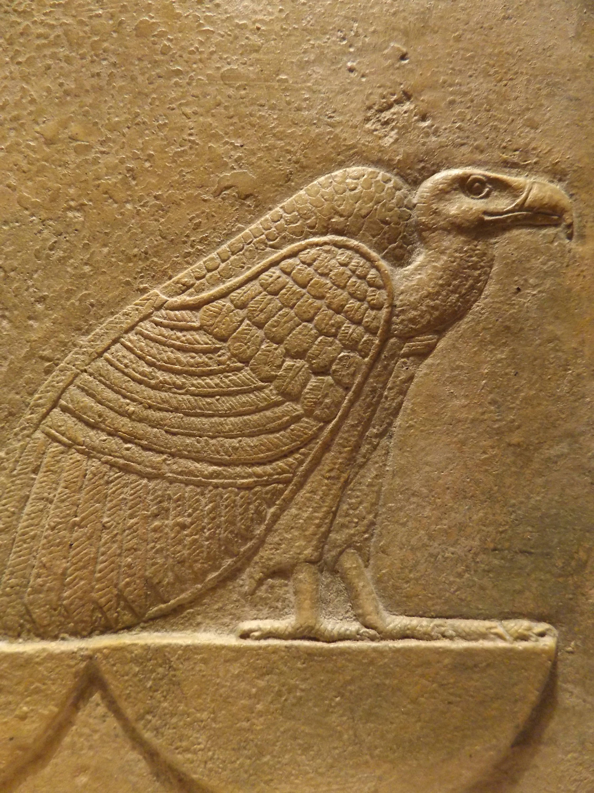
Représentée sous la forme d’un vautour, Nekhbet était la principale déesse de la Haute-Égypte, dont elle protégeait le roi. Son homologue septentrionale était Ouadjet, la déesse-cobra.
Nephtys
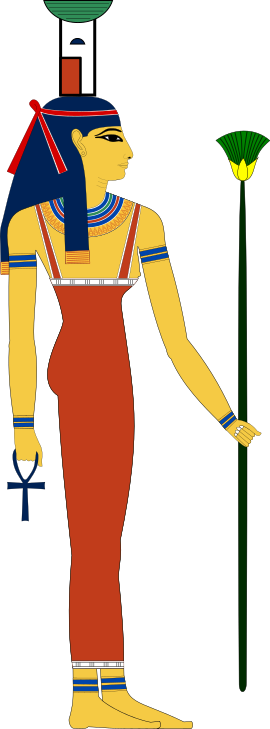
Nephtys est la fille de Nout, la sœur d’Isis et l’épouse de Seth, le dieu du désordre. C’est cependant à Osiris, de qui elle a eu un enfant, Anubis, que va sa loyauté. Lorsque Seth découvrit qui était le père de l’enfant, il assassina Osiris, et Nephtys se joignit à Isis dans sa recherche du corps d’Osiris. Tout comme sa sœur Isis, elle vient en aide aux morts et les protège. Elle est représentée comme une femme et porte sur la tête le hiéroglyphe de son nom.
Osiris
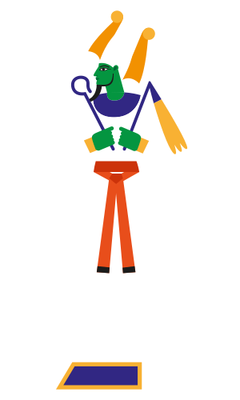
La première mention d’Osiris, l’un des principaux dieux égyptiens, apparaît dans des textes funéraires de l’ère des Pyramides, époque où débuta l’usage de la momification (2400 av. J.-C.). Il présidait les dieux qui déterminaient le sort des rois lorsqu’ils mouraient. Il a l’aspect d’un homme momifié portant une haute couronne blanche ornée de deux plumes d’autruche . Selon la mythologie égyptienne, Osiris fut assassiné par son frère Seth, puis ramené à la vie par l’amour de sa sœur-épouse, Isis. Ce mythe décrit les forces destructrices qui ont engendré le processus de la momification. L’amour d’Isis est le symbole de la régénération et de la promesse de la vie éternelle. Le cycle de la destruction, de la mort et de la renaissance se répétait chaque année lors de la crue annuelle du Nil, le fleuve qui fournissait les éléments indispensables à la vie et donna naissance à l’une des premières civilisations. Osiris est également assimilé au miracle du Nil et des riches récoltes qu’il permettait. Osiris, Isis et leur fils, Horus, constituaient une famille sacrée : dieu, déesse et enfant divin.
Ouadjet
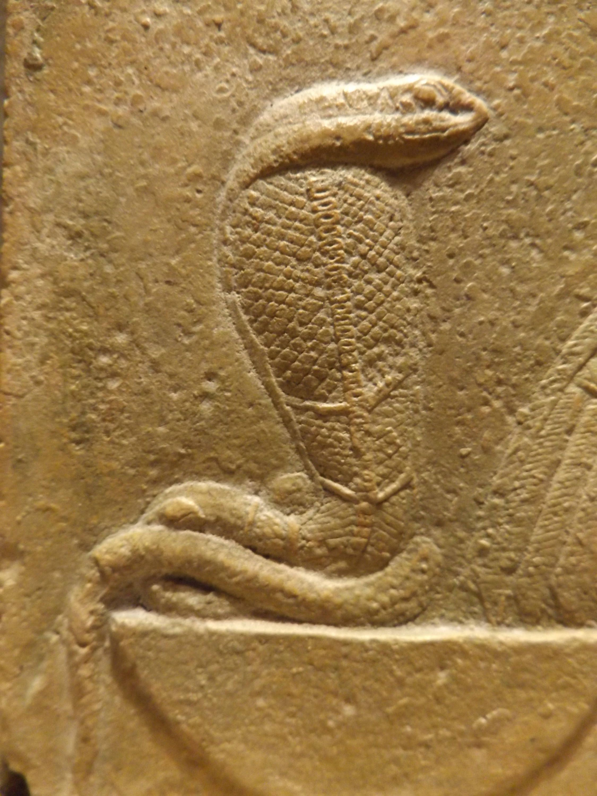
C’était la déesse-cobra dont la force meurtrière protégeait le roi de Basse-Égypte. Son homologue méridionale était Nekhbet, la déesse-vautour.
Ptah
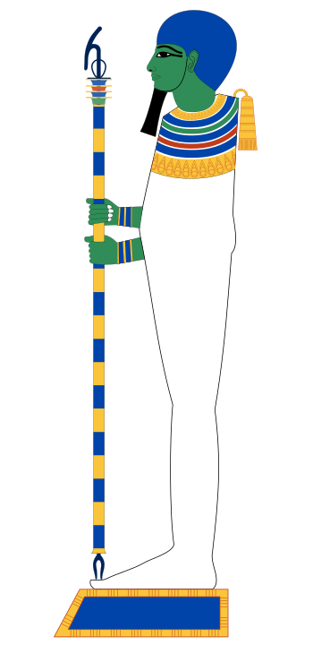
Dieu créateur de la ville de Memphis et époux de Sekhmet, Ptah est représenté comme un homme momifié tenant un ouas (un sceptre à la partie supérieure recourbée ayant la forme d’une tête d’animal, et à la base fourchue ).
Rê
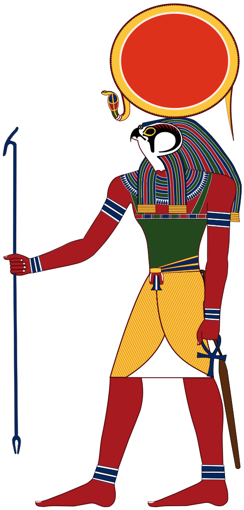
Le dieu solaire était considéré comme le principe créateur central et originel. Le lever et le coucher quotidien du soleil apportaient la preuve tangible du pouvoir que possédait le soleil de tomber dans le ciel occidental et de renaître chaque matin dans le ciel oriental. C’est Rê qui donna aux Égyptiens le concept de Maât – le principe de la vérité (le droit) et de la justice équitable. Ce concept fondamental devint la pierre angulaire de la civilisation égyptienne. Le voyage cosmique du soleil, symbolisé par le scarabée (bousier qui pousse le disque solaire à travers le ciel), se poursuivrait aussi longtemps qu’on continuerait à vénérer le dieu solaire et Maât. Lorsqu’apparurent les autres dieux, la prééminence de Rê fut étendue à d’autres formes du dieu solaire – Chou, puis Geb et finalement Osiris. Sur la terre, les rois de l’Ancien Empire étaient considérés comme l’incarnation mortelle du dieu solaire. Autrement dit, le roi était un dieu sur la terre, et par ses actes, accomplis dans le respect de la justice, il empêchait le monde de tomber dans le chaos. Le dieu solaire est également connu sous le nom de Rê-Horakhty ( « Horus de l’horizon ») et d’Atoum (le « Tout »), la substance d’où est tirée toute la création. Rê-Horakhty est un dieu au corps humain et à la tête de faucon portant une couronne en forme de disque solaire entouré d’un cobra, ou encore une couronne faite de cornes de bélier et ornée de plumes d’autruche. Atoum est représenté comme Roi d’Égypte et Seigneur de l’univers et porte la double couronne d’Égypte. Toutes ces formes du dieu solaire sont des symboles de la promesse de la résurrection, une réponse au problème de la mortalité humaine. Le culte du soleil a été perpétué par les rois égyptiens pendant des siècles. Ils construisirent des pyramides (symbolisant l’échelle qui monte jusqu’au soleil, ou encore les rayons obliques de celui-ci) et plus tard des temples dédiés aux dieux solaires. Lorsqu’un roi mourait, ses actes étaient jugés dans l’au-delà par Osiris, une des formes du dieu solaire qui gouvernait le monde inférieur. Si ses actes étaient considérés comme justes, le roi était transformé en une forme du dieu solaire .
Sekhmet
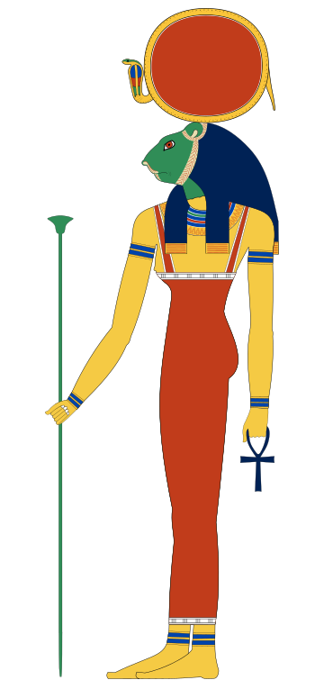
Sekhmet revêt l’apparence d’une femme à tête de lion surmontée d’un disque solaire et d’un uræus (cobra). Elle fut une importante déesse de la capitale thébaine pendant le Nouvel Empire (1550–1070 a v. J.-C.). Son nom signifie « celle qui est puissante », et en tant que telle, elle incarne les aspects agressifs des déesses féminines.
Selkis
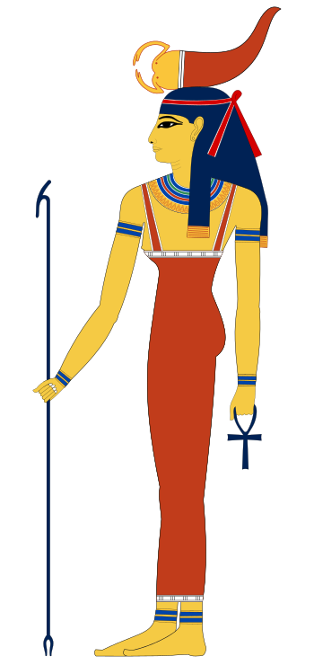
Selkis est habituellement représentée comme une femme avec un scorpion sur la tête. Son nom signifie « celle qui permet à la gorge de respirer ». Elle est la protectrice du canope à tête de faucon, et avec trois autres déesses, Isis, Nephthys et Neith, elle garde les sarcophages et les coffres canopes royaux .
Seth

Seth est le rejeton de Geb et de Nout. En tant que dieu du désordre, il est responsable de l’assassinat de son frère, Osiris. Dans le concept égyptien dualiste du cosmos, Seth est apparié à Horus, le dieu qui gouvernait la terre, lui assurant ordre et stabilité. Seth est une divinité à tête d’animal arrondie, aux grandes oreilles aux extrémités carrées et à la queue dressée ressemblant à une flèche. On n’a pas identifié l’animal qu’il représente. Il est souvent figuré avec un corps humain et une tête allongée d’oiseau, ce qui le fait ressembler au dieu Thot.
Sobek
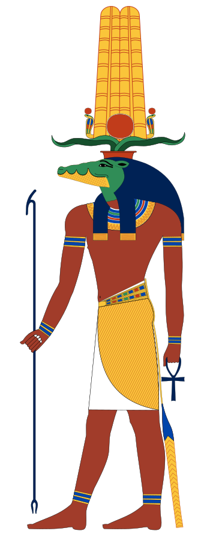
Le nom de ce dieu à tête de crocodile signifie « celui qui rend enceinte ou fertile ». À son lieu de culte de Kom Ombo, il partageait un temple avec Horus. Il fut plus tard intégré au culte d’Amon, étant adoré comme une manifestation du dieu solaire, Rê.
Thot

Thot est le messager du dieu solaire. Il est le dieu du savoir et de la sagesse, l’inventeur de l’écriture et de la science ainsi que le protecteur des scribes. On le représente sous l’aspect d’un être humain à tête d’ibis, d’un babouin, ou encore de la lune.
Toueris
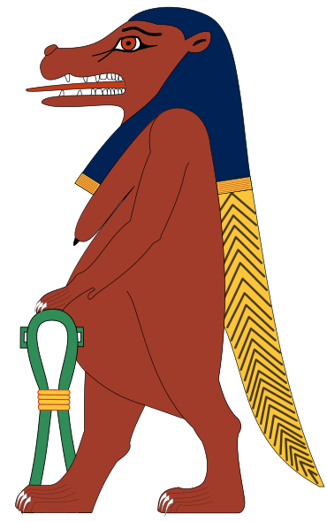
Déesse qui protégeait les femmes en couches, Touèris est représentée avec une tête d’hippopotame, les pattes d’un lion, et le dos et la queue d’un crocodile. Ses seins lourds et son ventre proéminent indiquent qu’elle est enceinte.